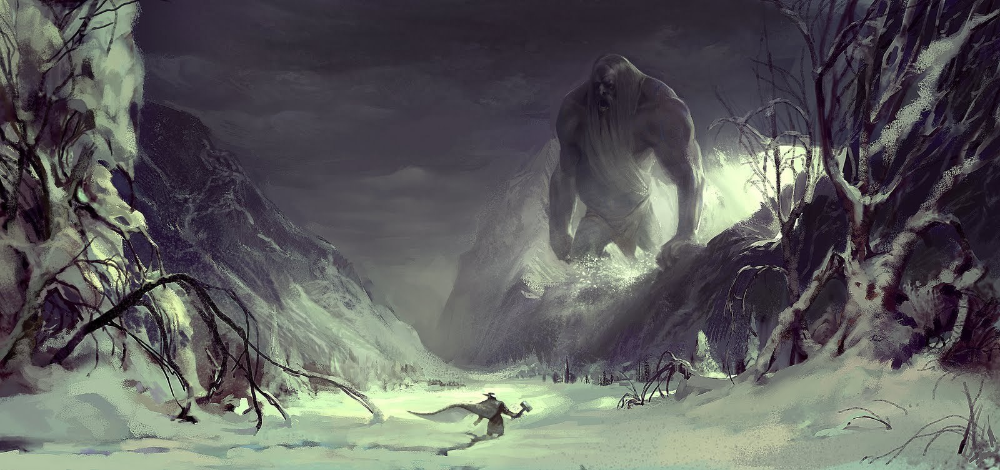

Йотунхейм
Нифльхейм – земля льдов и туманов, место обитания помещённых туда асами великанов-йотунов и богини Хель – одна из детей-отродий Локи. Этот мир существовал вместе с Муспельхеймом задолго до зарождения жизни.
В Нифльхейме всегда невероятная непогода и сильные холода, абсолютно всё там покрыто льдом. Расположен он к северу от Мидгарда (вероятнее всего Нифльхеймом являлись территории айсбергов Северного Ледовитого океана).
Йотунхейм – земля, населённая великанами-ётунами. По легендам был сотворён асами к востоку от Мидгарда для инеистого великана Бергельмира и его потомков.
От Асгарда Йотунхейм отделяет река Ивинг. Йотунхеймом правит король Трим. Основное поселение Йотунхейма — Утгард. Также упоминаются расположенные там Железный лес и Каменные горы. В Йотунхейме расположены Гастропнир — дом Менглад и Тримхейм — дом Тьяцци.
Шведский историк Стриннгольм указывал на то, что Йотунхейм лежит на север от Двины до Ледовитого океана и к востоку от Ботнического залива до Уральских гор. Впоследствии после установления более тесных отношений между скандинавами и жителями Руси, Волжской Булгарии и Биармии Йотунхейм был перенесён в сказаниях за Уральские горы.